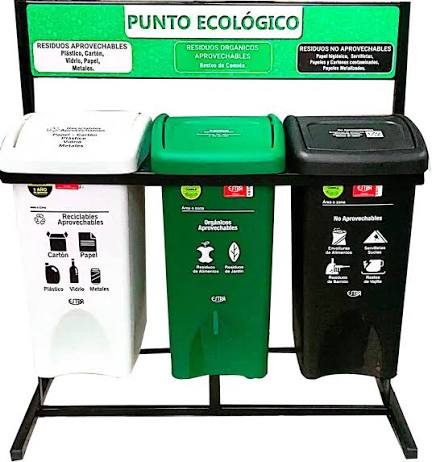

Rompecabezas: caneca blanca
Ordena las piezas para descubrir la caneca.
Mueve una ficha junto al espacio vacío.

Si pudieramos demostrar que el resiclaje no solo es separar residuos, sino que tambien puede ser hacer obras de arte con el reciclaje, laforma artistica de demostrar lo que se cree imposible, algo verdaderamente ALCANZABLE en la palma de nuestras manos.
Aqui esta nuestro proyecto escrito en el cual podemos brindar mas a detalle nuestro proyecto y avances.
archivoEste proyecto se hace en base a la problematica que se tiene en el sector de el entorno quibeño y a nivel bogotá. Pero para saber mejor esto, es necesario saber la situacion que tenemos donde se precenta esta problematica
El reciclaje es un metodo que busca mejorar el reducir, reutilizar, teciclar, etc. Para intentar vajar los niveles de contaminacion que hay en el mundo actualmente. este proces, lamentablementente no a sido el mas eficiente en cuanto a produccion y mejora ya este se ve afectado con la sobrepoblación, las compras impulsibas que generan mas desperdicios en la actualida. Especificamente en espacios como entornos hogareños, o escolares que son los entornos donde no se tiene mucho en cuenta estos, y que son los mas perjudiciales para en planeta tierra.
En la actualidad, el reciclaje ha tenido avances, pero sigue siendo una práctica poco eficiente debido al crecimiento de la población y al aumento de las compras impulsivas, que generan grandes cantidades de residuos mal gestionados desde los hogares. Esta inadecuada separación de desechos ha provocado graves problemas de contaminación ambiental y afectaciones a la salud humana. Según Flores Huamán y Cubas Rimachi (2023), “la contaminación no solo afecta al planeta, sino que también nos afecta principalmente por enfermedades respiratorias, cardiovasculares e incluso cáncer”, derivadas de la contaminación del aire, tierra, agua y alimentos.
Además, el cambio climático agrava la situación. Sauchay et al. (2022), citados por Flores Huamán & Cubas Rimachi (2023), encontraron que “el aumento de la temperatura ha incrementado las enfermedades respiratorias en un 14% y las cardiovasculares en un 9%”, evidenciando el impacto directo del calentamiento global en la salud. Freire, Meneses y Cuesta (2021), también citados por Flores Huamán & Cubas Rimachi (2023), afirman que “en Latinoamérica mueren alrededor de 7 millones de personas al año por contaminación” y advierten que, para 2050, el deshielo del Ártico causará desastres naturales como inundaciones y tsunamis.
El reciclaje es muy necesario ya el con este podemos llevar a cabo una "limpieza". en la que el planeta tierra, no resibe tantos daños que nos pueden perjudicar, actualmente estamos viviendo un fenómeno natural "el fenomeno del niño, el cual esta teniendo muchos afectados a nivel mundial y dejando atras muchas vidas de fauna y flora por sus fuertes sequiar y en especia, el cambio tan grande que hay en el mundo .
situaciones como estas estan sucediendo por parte de nuestra impridencia y desperdicios de recursos que al cabo de un tiempo, para nosotros ya no tiene utilidad y preferimos desecharlo sin saver verdaderamente que es l daño que estamos causando no solo al la sociedad, sino que dañamos el mundo completo, y el futuro de generas proximas, sera totalmente desesperanzador y moribundo por nuestras acciones, siendo un final muy tragico para la humanidad .
para esto podemos empezar a hacer una pequeña solución, haciendo actos de cuidado, como reciclar, reutilizar, reducir, etc., podrian disminuir millones de toneladas de basura dando un futuro esperansador para las futuras generaciones y la sociedad humana. Esta vez nos enfocaremos en el reciclaje, para poder tener un cambio y una repercusion creativa en las persona con las que llevaremos a cavo nuestro taller que motivara a los jovenes a ayuar al medio ambiente y dejar volar su creatividad.

Ordena las piezas para descubrir la caneca.
Mueve una ficha junto al espacio vacío.
Ordena las piezas para descubrir la caneca.
Mueve una ficha junto al espacio vacío.
Ordena las piezas para descubrir la caneca.
Mueve una ficha junto al espacio vacío.
Para los niños, la creatividad es el mecanismo que libera su mente y los permite solucionar problemas de formas creativas que nunca se podrian imaginar , por esto, haceremos un taller el cual permita insentivar a las personas para que, reciclen y cuiden el medio ambiente mientras fortalecen su creatividad. Para ello, tragimos diferentes videos que se llevaran a cabo para que los niños interactuen con nosotros y nos cuenten un poco de su experienca reciclando.
Los videos son los siguientes:
El marco floral es una linda decoracion, y regalo especial para momentos y dias en los que quieres entregar tu tiempo y dedicacion.
Las mariquitas bonitas, representan la importancia de cuidar a la fauna de nuestro medio ambiente ya que son muy importantes como nosotros.
para probar, que la motivacion y el esfuerzo colectivo tienen frutos positivos, en la insttucion recolectavamos uno de los contaminantes mas comunes en la instituion, las cucharas, este es un problema de contaminacion grave, ya que este tipo de plastico, no suele ser reutilizable, por lo tanto el desperdicio, suele ser abundante.
Por ello, decidimos llevar a cabo un taller de consientixacion con unos cuantos, en la cual su imaginacion es el que impulsa aun cambio social, "las ideas mas grandes, salen de mentes creativas" por esto en este taller, la divercion y la inspiracion eran nuestro objetivo:
.jpeg)
.jpeg)


hoy el dia de la ciencia, estamos mostrando lo que podemos crear, para ello nos gustaria que pudieras dejar tu calificacion y una forma de demostrar que estuviste con nosotros, por favor escanea el codigo Qr para entrar a esta pagina y escribir tu nombre, si lo haces apareceras en una lista dias posteriores de la feria de la ciencia.
Elige un juego. Todos se ejecutan dentro de esta página.
Ordena las piezas y descubre qué residuos se pueden aprovechar.
JugarCompleta el rompecabezas de los residuos orgánicos.
JugarArma la imagen y aprende qué residuos no son aprovechables.
JugarArrastra cada residuo al tacho correcto antes de que termine el tiempo.
Encuentra las parejas de residuos y sus contenedores correspondientes en tres niveles.
Clasifica tantos residuos como puedas y consigue puntos en un minuto.